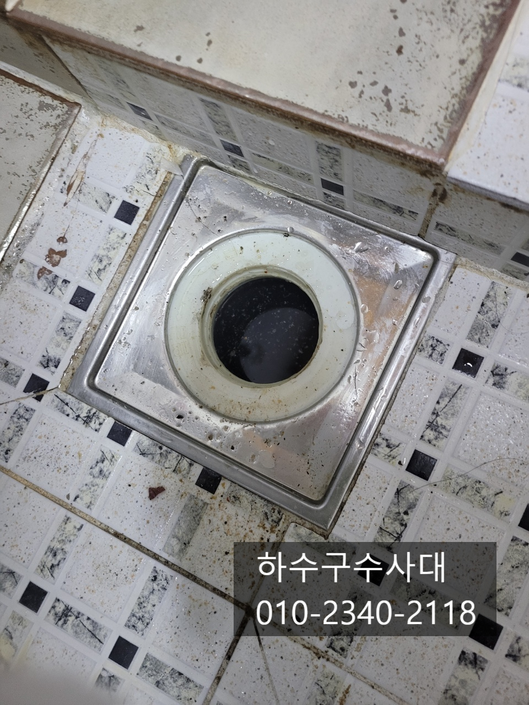
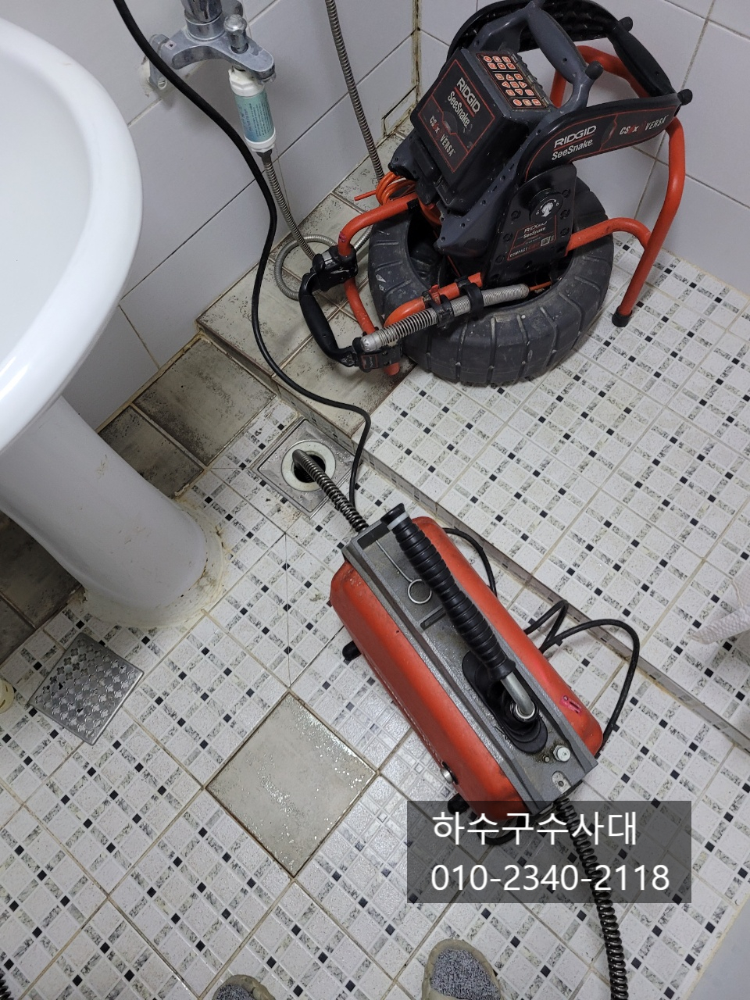
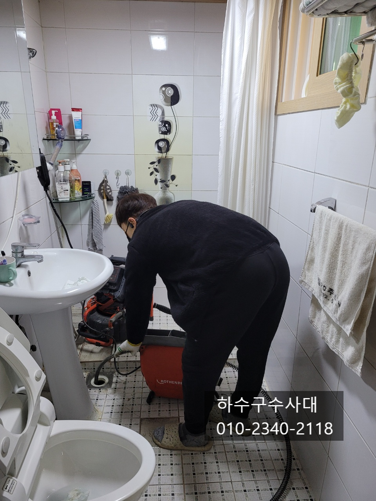
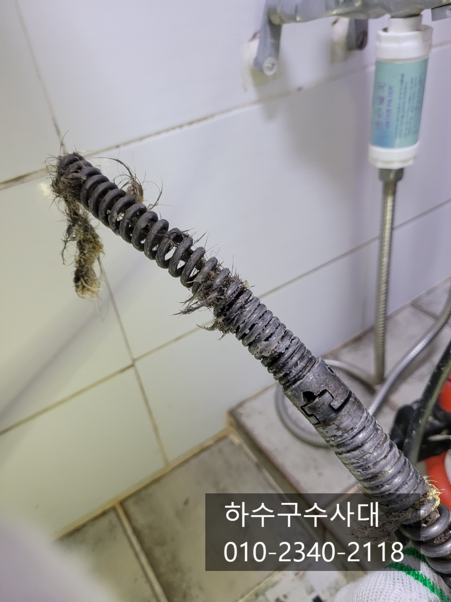
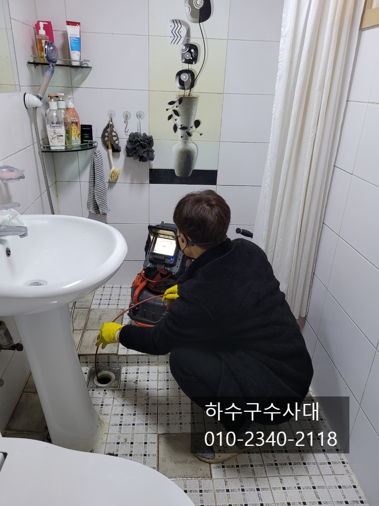
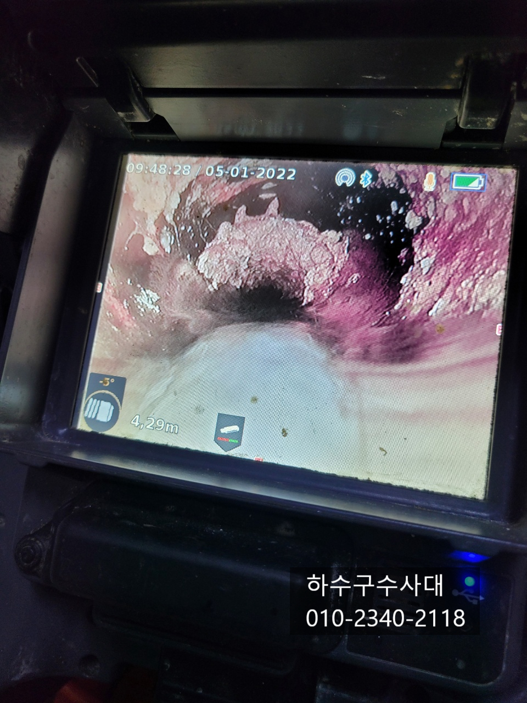
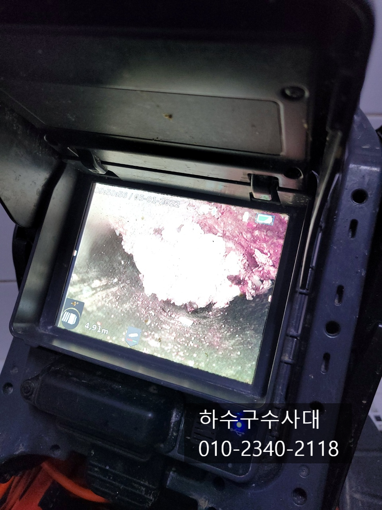

🏠 장안구하수구막힘 조원동 정자동 연무동 하수구전문업체
수원 원동 싱크대막힘 전문 시공 후기

📋 작업 개요
- 위치: 수원 원동, 원동, 수원
- 서비스 유형: 싱크대막힘, 하수구막힘, 배관막힘, 역류해결, 뚫는업체, 배관청소, 고압세척
- 작업 일시: 2022. 1. 7. 23:12
- 업체명: 하수구수사대 (010-5615-2118)
🔍 문제 상황
장안구하수구막힘 조원동 정자동 연무동 하수구전문업체
안녕하세요
"하수구수사대"입니다.
매일같이 사용하는 하수구가 막힌다면
굉장히 불편할텐데요 하지만 일상적으로 사용하는
하수구가 막히는 일은 흔치 않은 일입니다.
하지만 잘못된 사용방법과 실수로 일상적으로 사용하는
하수구가 막힐수 있으니 관리를 하면서 사용하여야 합니다.
오늘 방문한곳은 전원주택으로 싱크대에서 쓰는물이
욕실바닥으로 역류하여 물이 빠지지 못하고 있는 상황이였습니다.
고객님께서는 최근에 사골을 우려낸 물을 조금
흘려보냈는데 그것때문은 아닌지 걱정을 하셨답니다.
물이 전혀 내려가지 않은 상태였고 내시경카메라로
하수구내부를 촬영해 봤지만 이물질들이 많고 지져분하여
상태를 볼수가 없었습니다. 하수구를 뚫는 장비는 여러가지가
있지만 상황에 맞는 장비를 쓰는게 제일 중요하다고 볼수있습니다.
어떤 장비를 사용하느냐에 따라 금방 뚫릴수도 있고
상황을 더 심각하게 만들수도 또는 장비가 하수구에 박혀
나오지 않을 수도 있기때문에 하수구작업을 할때는 경험과 기술이
필요합니다.

🔎 원인 분석
💡 전문가 진단: 하수구수사대010-2340-2118
우선적으로 무엇으로 막혀있는지 모르기 때문에
통수작업을 진행하게 됩니다. 스프링장비는 통수시킬때
가장 유용한 장비로 기름덩어리,머리카락 등등 이물질을
밀어내거나 물이 나가는 길을 내주는 장비로 가장 효과적인
장비라고 할수 있어요.
하수구수사대
010-2340-2118
스프링장비는 기계의 힘으로 배관을 타고
천천히 진입되기 때문에 억지로 힘을주어
밀어 넣었다간 의도치 않은 일일 일어날수 있기
때문에 항상 조심하여야하고 숙련자라고 긴장하고
넣는 장비중에 하나랍니다^^
스프링을 10미터 쯤 넣자 물이 내려가는것을 확인할수가
있었는데요 스프링앞쪽에는 머리가락이 걸려나왔습니다.
스프링을 회수하고 내시경카메라를 통해 정확한 원인이
무엇인지 확인하는것 또한 중요한데요
물이 내려가는것을 확인하고 뚫렸다고 작업이 완료된것이
아닙니다. 물론 단순막힘의 경우도 있지만 항상 내시경검수를
통해 원인을 정확하게 파악하는게 하수구수사대의 원칙입니다.^^
내시경카메라를 넣어보니 배관에 기름이 상당히
많은것을 확인할수가 있었는데요 기름상태를 보아

🔧 작업 과정
오래전부터 쌓여 있는 기름입니다. 동맥경화처럼
배관의 구멍이 너무 좁아져 머리카락이나 기름덩어리가
떨어져 좁은 구멍을 막을 때마다 막힘증상이 나타날수 있으니
기름을 모두 제거해야합니다.
하수구배관에 기름이 쌓이는 원인은 여러가지가
있는데요 오늘 현장은 배관길이도 길다보니
일부구간이 구배가 좋지않아 물이 고여있어 기름이
정체되고 조금씩 배관에 붙어 굳게 됩니다.
오랜기간 쌓이게 되면 기름덩어리가 딱딱해지는데요
딱딱해진 기름은 자연적으로 없어지지 않는답니다.
응고된 기름들을 제거하는 방법은 여러가지가 있는데요
고압세척과 플렉스샤프트장비로 두가지모두 배관내부를 깨끗하게
청소가 가능한 장비입니다. 배관의 크기나 길이에 따라 장비사용이
결정되기도 하지만 작업자의 선택에 따라 달라질수도 있답니다.
오늘현장은 플렉스샤프트로 배관청소를 하였는데요
내시경카메라로 중간중간 내부를 확인하면서 배관에
붙어있는 기름들은 모두 제거해 나갑니다.
고객님께서도 옆에서 작업하는것을 눈으로 확인할수 있기때문에
작업을 지켜보면서 하수구배관 구조를 확인하고 앞으로
어떻게 관리를 하고 또 이러한 일이 발생했을때
대처할수 있을 것입니다^^
배관세척을 할때는 물을 틀어놓고 부숴진 기름덩어리를
하수구밖으로 흘려보내면서 작업을 하는데요
위 영상처럼 하수구쪽으로 많은 기름슬러지가 쏟아져
나오고 있습니다.
기름이 쌓이지 않게 관리를 해주는것이 중요한데요
우선 물을 충분히 흘려보내 줘야합니다. 그리고
기름진 음식물은 휴지로 닦아내고 설거지를 해주는 것도
좋은 방법이고 한달에 한번씩은 펑크린을 잠자기전 하수구에
흘려보내주게 되면 물이고이는곳에 펑크린이 머물러
배관에 붙어있는 기름을 녹여주게 됩니다.
배관에 붙어있는 기름들을 모두 제거한후
내시경카메라로 확인을 해주는 작업은필수 입니다.


✅ 작업 완료
배관이 새것처럼 깨끗하게 청소가 되었기 때문에
앞으로 관리만 잘하시면 평생 막힐 일은 없으실겁니다^^
"하수구수사대"는 하수구전문업체로
다년간의 경험과 기술력 최첨단 장비를 보요하고
있으면 어떤 현장이든지 해결이 가능하오니
하수구막힘으로 고민중이시라면 언제든지
연락주세요^^
경기도 수원시 권선구 곡반정로97번길 9 5층
서울/경기/인천 전지역 출장가능합니다.




⚠️ 주방 싱크대 배관 막힘 예방 수칙
- ✅ 기름기가 묻은 식기나 프라이팬은 설거지 전 키친타올로 반드시 기름때를 닦아내세요.
- ✅ 주기적으로 싱크대 개수대에 뜨거운 물을 가득 받아 한 번에 내려 배관 내부 기름을 씻어내세요.
- ✅ 배수구 거름망을 미세한 필터로 사용하시고 음식물 찌꺼기가 틈으로 새어 들지 않게 관리하세요.
- ✅ 베이킹소다와 식초를 뜨거운 물과 함께 일주일에 한 번씩 부어주면 배관 살균과 막힘 예방에 좋습니다.
💡 핵심 정리
- 확실한 장비 작업(내시경 점검 및 샤프트 스케일링)으로 원인을 뿌리 뽑습니다.
- 작업 후 1년 이내에 동일한 부위 재발 시 100% 무상 A/S 서비스를 보장합니다.
- 서울 · 경기 · 인천 전 지역에 24시간 언제든 긴급 출동할 수 있도록 항시 대기 중입니다.
❓ 자주 묻는 질문 (FAQ)
🚨 수원 원동 싱크대막힘 문제로 고민이신가요?
정확한 원인 진단과 확실한 시공으로 재발 없는 해결을 약속드립니다.
24시간 긴급 출동 | 서울 · 경기 · 인천 전지역 | 1년 내 재발 시 무상 A/S